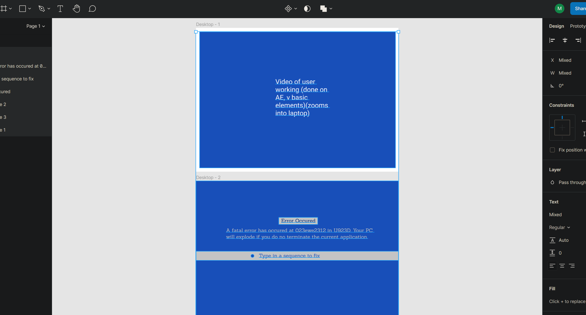
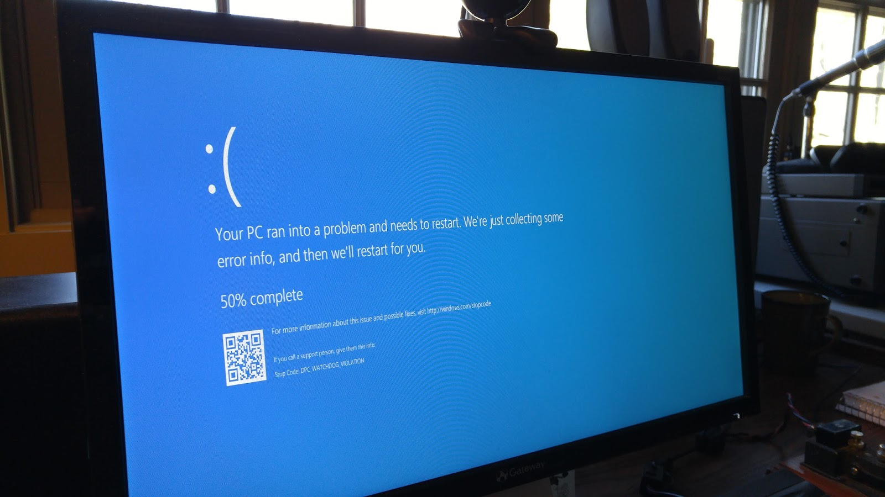
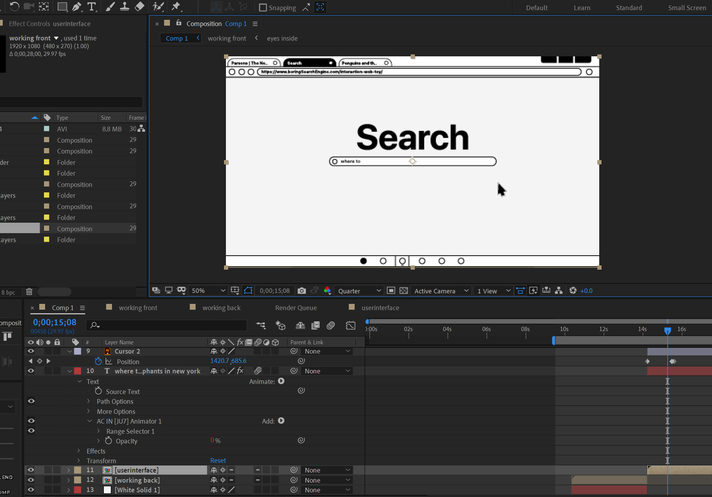

Week 11-13
For this project we were tasked with creating an interactive, browser-based web toy.The task was to ensure that I am using atleast one user-generated event from the browser and react to it with at least one function. I started by creating a prototype in figma.
My idea was to create a website which soon after opening, crashes by showing an error screen. Then, the user needs to interact with the error and try to fix it by inputting a password. I was inspired by my own laptop crashing earlier in the month and showing a blue screen of death.
In order to make the website more attractive and interactive, I contemplated between a number of different ideas. I decided to create a short animated cut-scene which starts before the interactive part of the website begins. I created these motion graphics using After Effects and Illustrator. They have been created precisely with user-interactions in mind.
The javascript interaction is for the user to input a "password" to fix their error. The way I do this is by counting the number of keystrokes the user has entered, and once it reaches 20, I redirect them back to the original page (i.e. fixing the error).